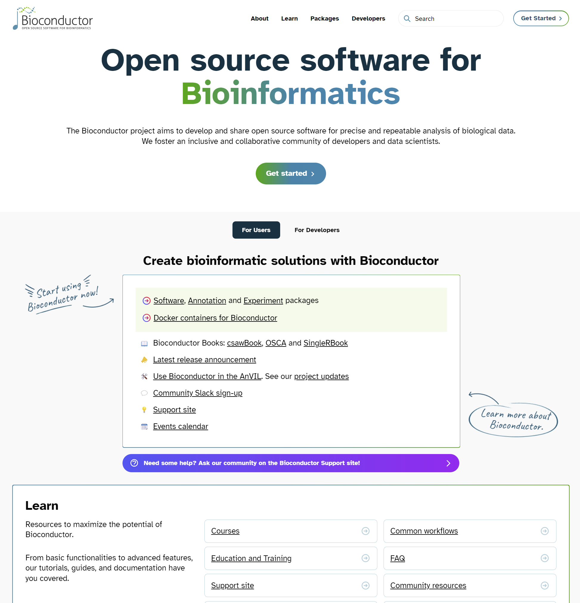

if (!requireNamespace("BiocManager", quietly = TRUE))
install.packages("BiocManager")
BiocManager::install("IRanges")
## .libPaths()7 Bioconductor
7.1 Introduction
- https://www.bioconductor.org
Bioconductor는 바이오인포메틱스를 위한 R기반의 데이터, 메소드, 그리고 패키지들의 모음입니다. 2002년 microarray 데이터 분석을 위한 플랫폼으로 시작되었으며 현재 2000개 이상의 패키지로 구성되어 있습니다. R은 분산형 오픈소스이나 Bioconductor는 Full-time developer들에 의해서 유지되고 있습니다. CRAN에 배포되지 않고 CRAN에 비해 더 많은 필수 자료들 (vignettes 등)이 필요하며 높은 수준으로 quality control이 되고 있습니다. Bioconductor는 6개월마다 예정된 릴리스를 통해 모든 bioconductor 패키지가 충돌없이 조화롭게 작동하도록 유지되고 있습니다.
Bioconductor가 R에 기반을 둔 가장 큰 이유는 다수의 통계학자들이 패키지를 만들어서 생물학적 데이터 분석에 활용하고 있다는 점 입니다. 즉, R은 통계 및 “데이터 과학”에서 핵심 역할을 하고 있고 게놈 규모의 실험 데이터를 다루는 분석전문가들에게 R 기반의 도구의 선택은 자연스러운 현상입니다. R은 통계 및 “데이터 과학”에서 사용하기 쉽고 중심적인 역할을 하기 때문에 게놈 규모의 실험 데이터를 다루는 전문가들에게는 R이 자연스러운 선택입니다.
사용 가능한 패키지들은 이곳을 참고하시면 되겠습니다.

Bioconductor 코어 개발 그룹은 사용자들이 지놈스케일 데이터를 더 편리하게 다루룰 수 있도록 데이터의 구조를 개발하고 있습니다. Bioconductor의 주요 기능은 다음과 같습니다.
- 지놈스케일의 서열이나 발현등 대용량 유전자형 데이터 관리 및 통계적 분석을 위한 툴 제공
- 분자수준의 현상과 생장이나 질병 등 표현형수준의 관계를 규명하기 위한 정량 데이터 통합 및 관리
사이트 리뉴얼

7.2 Packages
카이스트 강의
- Bioconductor에서 제공하는 소프트웨어, DB, Data 종류 이해
- Bioconductor 패키지 설치, 도움말, 문서 사용법 이해
메인화면 >> Use >> Software, Annotation, Experiment
- Software: 데이터 분석을 위한 알고리즘/툴 모음
- Annotation: 유전자 symbol/ID mapping, gene ontology 기반 유전자 분류, 유전체상에서 exon, transcript, gene 등의 위치, 단백질 기능 등. Annotation > Packagetype 참고
- Experiment data: 검증된 실험 데이터
- Workflow: 특정 데이터 분석을 위한 프로세스 모음 RNA-seq, ChIP seq, copy number analysis, microarray methylation, classic expression analysis, flow cytometry 등

Annotation 리소스는 다음과 같이 몇 단계의 레벨로 구분할 수 있습니다.
- BSgenome: Biostring 형식으로 저장된 특정 생물의 완전한 염기 서열 정보
- OrgDb: 특정 생물(Organism)의 기능적 annotations
- ChipDb: 다양한 microarray platform 기반 Chip (probe) 정보
- TxDb/EnsDb: 전사체 정보, 위치 정보
- InparanoidDb: 단백질 homology 정보
- Others GO.db: KEGG.db
위 독립적인 annotation 리소스를 통합한 패키지들이 제공되고 있으며 대략적으로 다음과 같습니다.
- OrganismDb: 특정 종에 대한 OrgDb, TxDb, GO.db 등을 포함하는 패키지 DB
- AnnotationDbi: OrgDb, ChipDb, TxDb 포함
- AnnotationHub: 다양한 annotation 정보를 얻을 수 있도록 만든 온라인 툴 (Bioconductor’s AnnotationHub service)
- biomaRt: 다양한 annotation 정보를 얻을 수 있도록 만든 온라인 툴
- 모든 .db 패키지는 Bioconductor에 의해서 6개월마다 업데이트됨
Homo.sapiens의 경우 아래와 같으며 biocViews 의 OrganismDb 를 클릭하면 OrganismDb 타입의 annotation 패키지를 볼 수 있습니다. 현재 (23.11) Homo.sapiens, Mus.musculus, Rattus.norvegicus 의 3종류가 제공됩니다.

Bioconductor에서 제공하는 패키지를 설치하기 위해서는 BiocManager를 먼저 설치하고 해당 패키지를 설치하시기 바랍니다. BiocManager에는 available()이라는 함수로 (특정 문자가 포함된) 사용 가능한 패키지를 검색할 수 도 있습니다. 예를 들어 IRanges라는 패키지를 설치할 경우 bioconductor 상단 오른쪽의 Search 나 software package list의 검색창에서 IRanges를 입력하여 해당 패키지를 찾고 다음과 같이 설치를 수행합니다.
Exercises
- OrganismDb는 meta-package의 형태로 OrgDb, TxDb, 그리고 GO.db 패키지들을 포함하는 정보를 가지고 있음. OrganismDB 중 인간의 정보를 가진
Homo.sapiens를 찾아 설치하시오
if (!require("BiocManager", quietly = TRUE))
install.packages("BiocManager")
BiocManager::install("Homo.sapiens")
library(Homo.sapiens)
class(Homo.sapiens)7.3 Learning and support
각 패키지는 제목, 저자, 유지관리자, 설명, 참조, 설치법 등의 정보가 포함된 landing page가 있으며 패키지 내 함수들은 상세한 설명과 예제가 제공됩니다. 예를 들어 IRanges의 landing page를 참고하세요. vignettes는 bioconductor의 중요한 특징 중 하나로 R 코드와 함께 패키지를 사용하는 방법에 대한 상세한 설명을 제공하는 문서입니다.
library(IRanges)
vignette(package="IRanges")
browseVignettes("IRanges")
vignette("IRangesOverview", package="IRanges")
ir1 <- IRanges(start=1:10, width=10:1)
ir1
class(ir1)
methods(class="IRanges")
example(IRanges)
?IRanges
??IRanges메인페이지 >> Learn >> Support site 게시판에는 관련된 여러 QnA 들이 있어서 유사 문제에 대한 도움을 받을 수 있습니다.
7.4 OOP - Class, Object and Method
객체지향프로그래밍 (OOP)은 복잡한 문제를 프로그래밍할 때 발생되는 코드의 복잡성을 해결할 수 있는 하나의 방안으로 1990년대부터 많이 사용되었습니다.
R도 객체지향 프로그래밍 언어입니다. 그런데 R은 다른 언어들에 비해서 좀 어려운 (다른) 개념으로 사용됩니다. R에서 사용하는 Class에는 크게 base type, S3, S4, RC, 그리고 R6 등 다양한 타입이 있고 이 중 S3를 많이 사용해 왔으며 S3의 단점을 보완한 S4 형식의 class와 R6를 주로 사용합니다 (AdvancedR?). 본 강의에서는 S3 형식의 class만 다루도록 하겠습니다.
클래스를 사용하는 이유는 여러가지가 있겠지만 복잡한 개념의 데이터를 구조화하고 쉽게 관리하기 위해서 사용한다고 보면 될 것 같습니다. 여러분이 알아야할 개념은 Class와 Object 그리고 Method 입니다. 사실 R의 모든것이 Object이고 이러한 Object들의 정의가 Class 입니다.
mydf <- data.frame(x=c(1:5), y=LETTERS[1:5])
mydf
class(mydf)위에서 mydf는 변수라고 부르지만 object라고 부르기도 합니다. mydf의 class는 data.frame 입니다. 클래스는 누구든 원하는 만큼 얼마든지 만들 수 있습니다.
class(mydf) <- "myclass"
print(mydf)
mydf
class(mydf)
class(mydf) <- c("data.frame", "myclass")
mydf
class(mydf)그런데 모든 object들이 OOP 유래는 아닙니다 base object들이 그 예입니다.
x <- 1:10
class(x)
attr(x, "class")
mtcars
attr(mtcars, "class")클래스를 만드는 목적은 앞에서 언급 한 바와 같이 복잡한 개념의 구조화와 쉬운 관리를 위함입니다. 예를 들어 내가 개발한 특정 함수가 특정 데이터 타입만 method는 위와 같은 클래스들에 특화된 어떤 기능을 하는 함수라고 생각하시면 됩니다.
mt <- matrix(1:9, 3,3)
df <- data.frame(1:3, 4:6, 7:9)
class(mt)
class(df)
str(mt)
str(df)
diamonds <- ggplot2::diamonds
summary(diamonds$carat)
summary(diamonds$cut)
methods(class="data.frame")
methods(class="myclass")위 summary, str 등이 generic function이라 불리는 method들 입니다. class마다 사용 가능한 method가 어떠한 정보가 있는지 알기 위해서 methods()라는 함수를 사용합니다. R의 객체지향프로그래밍에 대한 상세한 내용은 Advanced R를 참고하세요.
Exercises
- 다음 두 종류의 객체에 대해서 class 가
integer일 경우 평균을 계산하고character일 경우 비율을 계산하는 (table함수 사용)mysummary함수를 만드시오
x <- c(1:10)
y <- c("A", "G", "G", "T", "A")7.5 Bioconductor의 OOP
bioconductor에서 다루는 genome 스케일의 experiment나 annotation은 대표적인 복잡한 데이터 중 하나 입니다. Bioconductor에서 OOP 개념은 다음과 같습니다.
class - 복잡한 생물학적 데이터 구조의 틀 정의
object - 특정 클래스가 구현된 실체
method - 특정 클래스에 대한 기능 수행
예를 들어 앞에서 설치한 Homo.sapience의 class인 OrganismDb 살펴보면 다음과 같습니다.
library(Homo.sapiens)
class(Homo.sapiens)
?OrganismDbThe OrganismDb class is a container for storing knowledge about existing Annotation packages and the relationships between these resources. The purpose of this object and it’s associated methods is to provide a means by which users can conveniently query for data from several different annotation resources at the same time using a familiar interface.
homo_seq <- seqinfo(Homo.sapiens)
class(homo_seq)
?SeqinfoA Seqinfo object is a table-like object that contains basic information about a set of genomic sequences. …
length(homo_seq)
seqnames(homo_seq)bioconductor에는 대용량 정보가 object 형태로 구조화되어 저장되어 있으며 library()함수로 읽어올 수 있고 다양한 함수로 해당 object의 정보를 읽어올 수 있습니다.
Exercises
Homo.sapiens정보에서 상위 10개 유전자와 상위 10개 exon을 구하시오
genes(Homo.sapiens)[1:10]
exons(Homo.sapiens)[1:10]7.6 Bioconductor hub
- AnnotationHub는 Bioconductor에서 서비스하는 annotation server에 접속할 수 있는 client interface를 제공합니다. annotationHub server는 전장 유전체 정보중 공공에서 활용 가능한 대규모 데이터를 제공합니다. ENSEMBL genome fasta, GTF files, UCSC resources, ENCODE data track 등을 포함합니다.
library(AnnotationHub)
hub <- AnnotationHub()
class(hub)
mcols(hub) |> as.data.frame() |> count(rdataclass)
이 저작물은 크리에이티브 커먼즈 저작자표시-비영리-변경금지 4.0 국제 라이선스에 따라 이용할 수 있습니다.